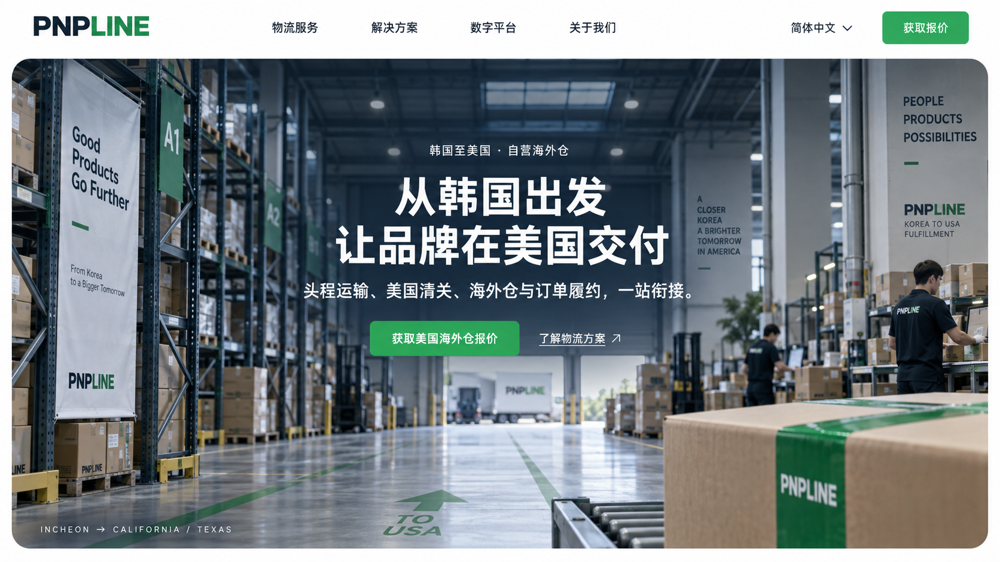
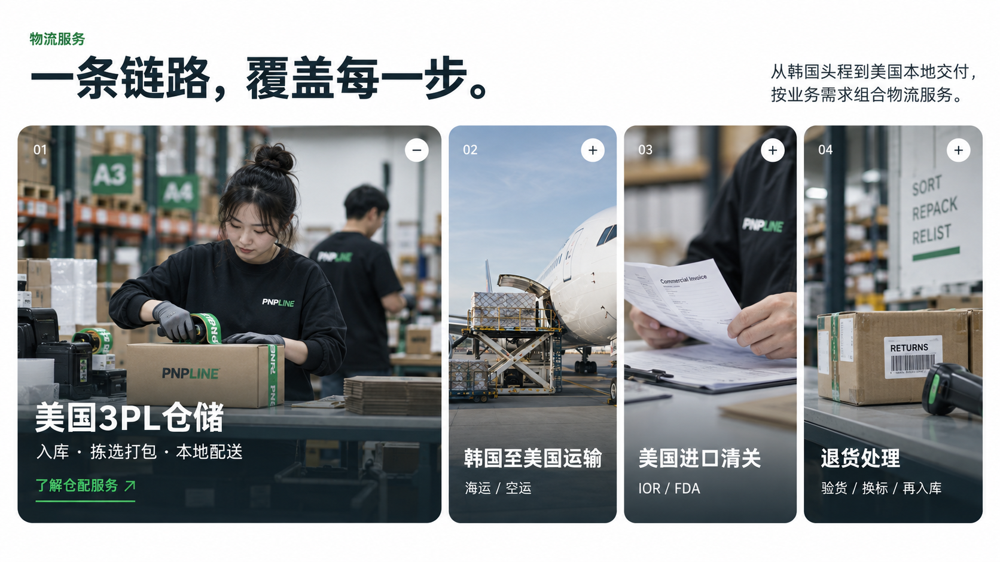
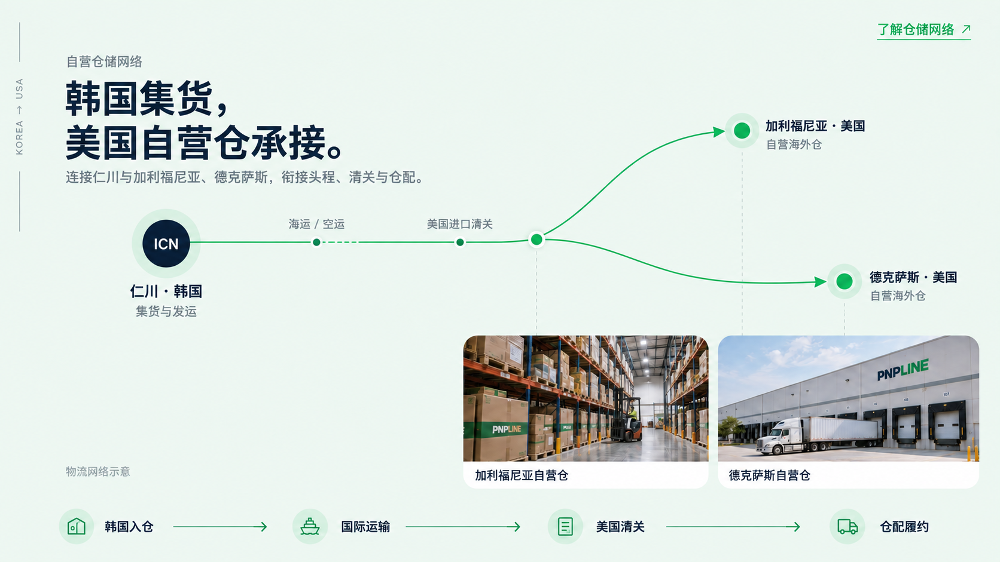
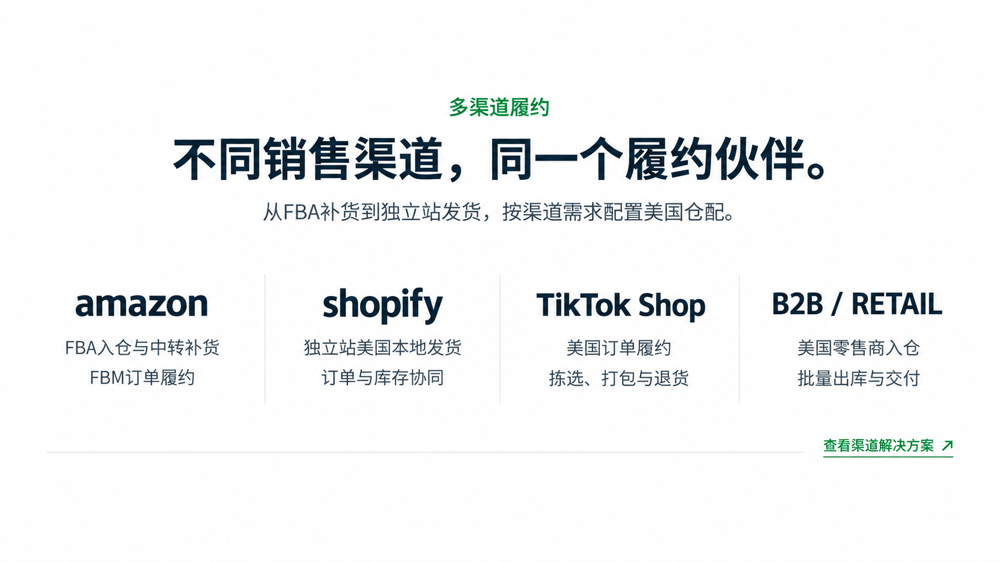
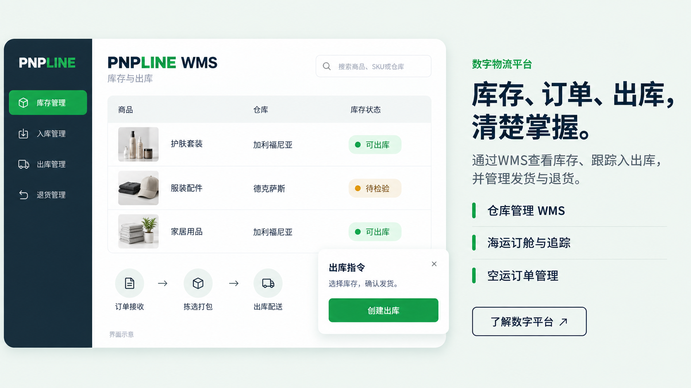
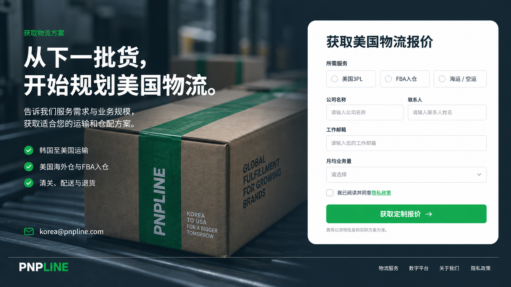

SIMPLIFIED CHINESE · HOMEPAGE DIRECTION · 2026.09.09
한국에서 미국까지,
하나로 이어지는 물류 경험.
ShipMonk의 밝은 바탕·네이비·초록색 버튼·둥근 대형 사진 구성과 PNPLINE의 중국어 콘텐츠 전략을 반영한 홈페이지 컨셉입니다. 6개의 독립된 가로 시안을 페이지 순서대로 배치했습니다.
창고·인물 사진과 WMS는 이미지 생성으로 만든 컨셉 표현입니다. 실제 시설 사진이나 운영 화면을 촬영한 자료가 아닙니다.
01 / 히어로
한국 출발 미국 물류를 한 문장으로 전달하고, 해외창고 견적 문의로 연결합니다.

02 / 핵심 서비스
3PL·운송·통관·반품을 사진 중심의 아코디언으로 구분합니다.

03 / 한미 물류망
인천에서 캘리포니아와 텍사스 직영 창고로 이어지는 업무 관계를 도식화합니다.

04 / 판매 채널
Amazon·Shopify·TikTok Shop·미국 유통사별 서비스 탐색을 돕습니다.

05 / 운영 시스템
재고 조회와 출고 지시를 중심으로 디지털 물류 시스템을 소개합니다.

06 / 견적 상담
서비스와 사업 규모를 입력하는 간단한 견적 상담으로 마무리합니다.

제작: 내장 imagegen · 물류망 최종안은 비지리적 경로 도식입니다. 26개 페이지의 중국어화 범위를 유지하면서 이번 디자인 작업은 홈페이지 방향을 구체화했습니다. 이 미리보기는 이미지 갤러리이며, 이미지 안의 견적 폼과 서비스 버튼은 시안입니다.